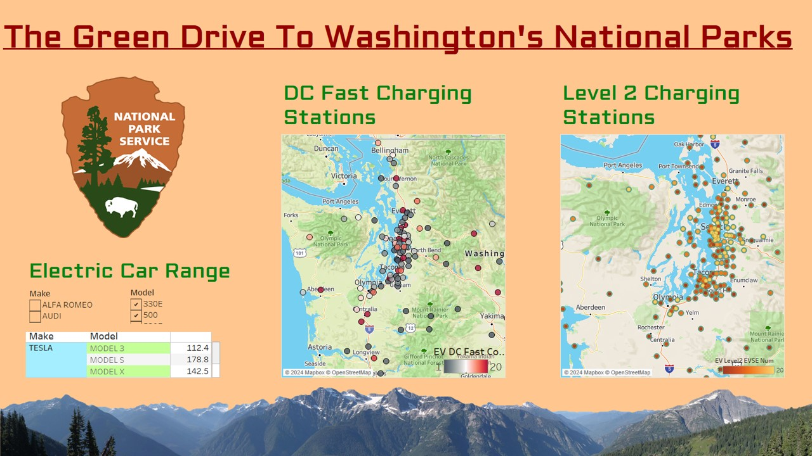

Green Drive to Washington's National Park
Washington State boasts some of the most stunning natural landscapes in the United States, and two of its crown jewels are Olympic National Park and Mount Rainier National Park. What makes these destinations even more enticing is their accessibility to electric car owners, presenting a perfect opportunity for a day trip or a weekend getaway.
With the growing popularity of electric and hybrid vehicles in the region, numbering around 173,533 registered cars as of February 14, 2024, many Seattleites and suburban dwellers find themselves equipped for eco-friendly adventures. The proximity of these national parks is particularly striking, being only an hour and a half drive from Tacoma and a two-hour drive from most Seattle suburbs.
One of the key enablers for these trips is the infrastructure supporting electric vehicles. DC Fast charging stations strategically located in Olympia, just an hour's drive from Olympic National Park, and Tacoma, an hour's drive from Mount Rainier National Park, offer reassurance to travelers. Additionally, numerous Level 2 charging stations at hotels along the way provide added convenience. Even if your exploration extends to the picturesque Pacific coast, fear not about running out of charge. Ample charging stations pepper the route, ensuring you never have to worry about being stranded mid-adventure.
The dashboard below exhibits the distribution of electric cars across Washington State counties. Additionally, interactive maps pinpoint the locations of accessible DC Fast Charging Stations and Level 2 charging stations for visitors to Olympic National Park and Mount Rainier National Park. This dashboard relies on the most recent EV population data from the Washington State Open Data Portal and the current operational charging network data provided by the U.S. Department of Energy's Alternative Fuels Data Center (AFDC) . To access the interactive dashboard, click here to view it on my Tableau Public profile.

Beyond the convenience, there's a deeper motivation for choosing electric vehicles when exploring these natural wonders: conservation. As we marvel at the beauty of Olympic and Mount Rainier National Parks, why not take the next step in preserving them? Electric vehicles offer a solution to mitigate the environmental impact of traditional gas-powered cars, which emit harmful pollutants like CO, CO2, NO, and NO2.
By opting for electric cars, we reduce our carbon footprint, minimize air and noise pollution, and contribute to the preservation of fragile ecosystems. In doing so, we honor the ethos of these national parks, ensuring they remain pristine and untouched for generations to come.
Consider the prospect of your next adventure to Olympic National Park or Mount Rainier National Park taking place in an electric vehicle. Not only will you experience the unparalleled beauty of Washington's wilderness, but you'll also play a part in safeguarding it for future explorers. Let's pave the way for a greener, more sustainable approach to enjoying our national treasures.